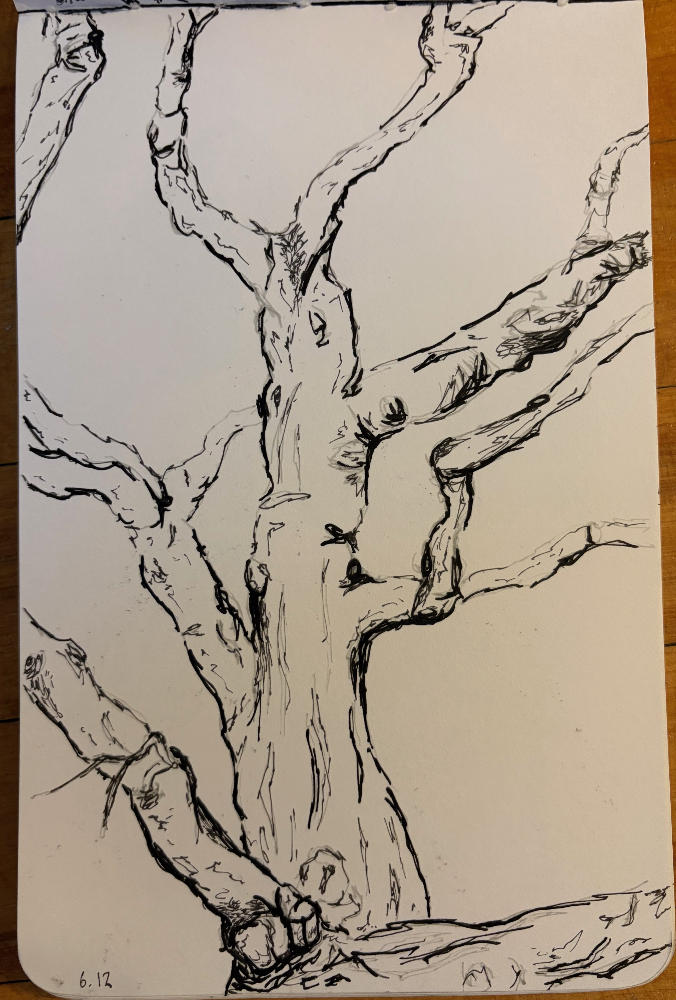
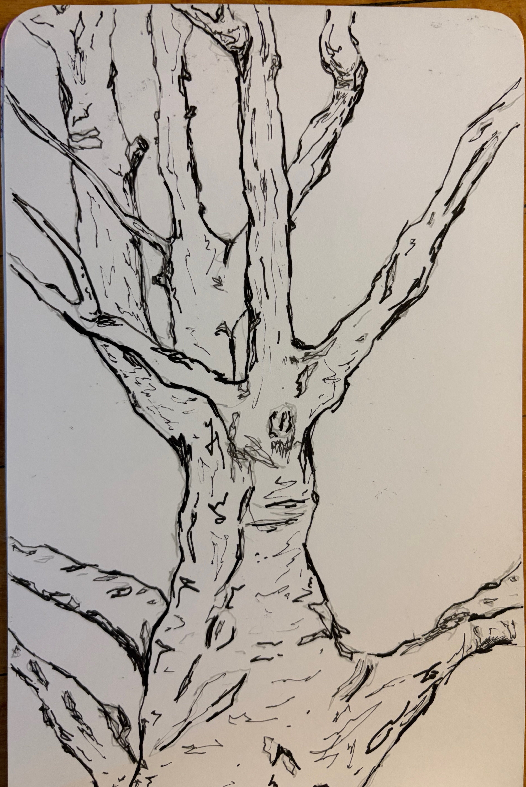
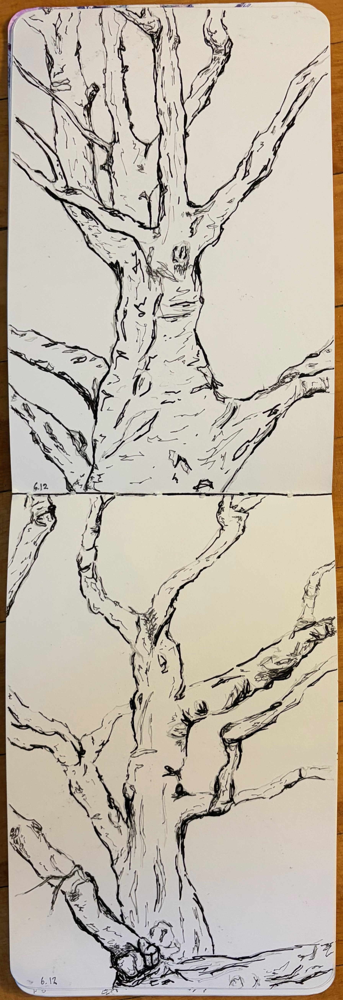

Two sketches of trees in the park next to the Being ALIVE Japan office, where I had weekly meetings during my two months of working in Japan. In these drawings, I began with a loose "sketch" using a grey pen, followed by thinner black lines and eventually bringing the most depth with the thickest pen I had available.


